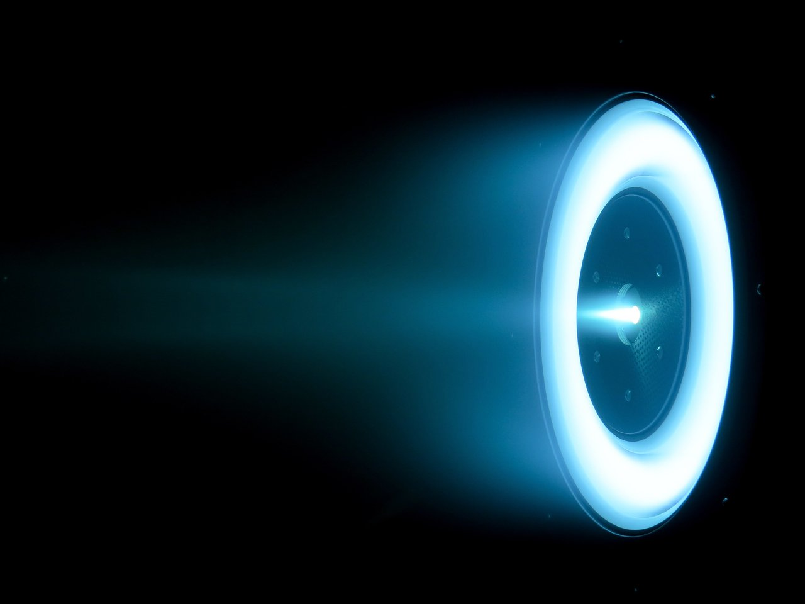

The gridded ion engine was one of the
two electrostatic thrusters the Cold War split produced. This is the other one. Where
the American program pursued the gridded engine, the Soviet program pursued the
Hall-effect thruster, and it is the Soviet line that produced the
stationary plasma thruster flying on satellites
today.3
Color keythrustioncharge q, electronB fieldE fieldneutral
A Hall thruster has three characteristic features. An annular discharge channel with an
anode at its base, which is also the gas distributor. A
magnetic circuit, coils and a core and two pole pieces, that lays a radial
magnetic field across that channel near its exit. And a hollow
cathode outside the body, which sustains the discharge and neutralizes the beam at the
same time.1 Notice what is absent: there are
no grids. Nothing in the hardware sits where the accelerating field goes.
So the guiding question for this whole lesson is a simple one. If no electrode makes the accelerating field,
what does? The short answer is that the magnetic field takes the place of the
accelerator grid, and the four pages that follow unpack how.
Use this 3D model to familiarize yourself with the thruster. The cross section shows the inner components, and
you can toggle component labels, the
electromagnetic fields, and particles. The model was built
from a published section drawing and is proportioned after it
rather than after any flown thruster.
An SPT-140 firing at JPL. No open-license photo of the
SPT-100 itself was available, so this is its 4.5 kW sibling from the same Fakel SPT
line, two of which fly on Psyche. The glowing ring is the annular
discharge channel, and the small jet above it is the
cathode. NASA / JPL-Caltech
NASA Glenn & JPL, magnetically shielded|TODO: power, thrust, Isp

HERMeS TDU-2 running at 600 V and 12.5 kW at
JPL. The bright ring is the discharge channel seen end-on, and the
xenon ions leaving it fade out to the left.
NASA / JPL-Caltech
Thrust
$$ \boxed{\;\textcolor{#FF4400}{F} = \textcolor{#FF4400}{\dot{m}}\,\textcolor{#3DBFFF}{c}\;} $$
Specific Impulse
$$ \boxed{\;\textcolor{#3DBFFF}{I_{sp}} = \frac{\textcolor{#3DBFFF}{c}}{g_0} \qquad[\mathrm{s}]\;} $$
Electron Gyrofrequency and Gyroradius
$$ \boxed{\;\omega_{ce} = \frac{\textcolor{#C060FF}{e}\,\textcolor{#00DDB5}{B}}{m_e}\;}
\qquad\qquad
\boxed{\;r_{ce} = \frac{m_e \textcolor{#3DBFFF}{v_\perp}}{\textcolor{#C060FF}{e}\,\textcolor{#00DDB5}{B}}\;} $$
Azimuthal Drift, the Hall Current
$$ \boxed{\;\textcolor{#3DBFFF}{\vec{v}_{E\times B}}
= \frac{\textcolor{#F5C518}{\vec{E}} \times \textcolor{#00DDB5}{\vec{B}}}{\textcolor{#00DDB5}{B}^{2}}
\qquad \left|\textcolor{#3DBFFF}{v_{E\times B}}\right|
= \frac{\textcolor{#F5C518}{E}}{\textcolor{#00DDB5}{B}}\;} $$
Hall Parameter, How Magnetized the Electrons Are
$$ \boxed{\;\Omega_e = \frac{\omega_{ce}}{\nu_e}\;} $$
Magnetic Moment and the Loss Cone
$$ \boxed{\;\mu = \frac{m_e \textcolor{#3DBFFF}{v_\perp}^{2}}{2\,\textcolor{#00DDB5}{B}} = \text{const}\;}
\qquad\qquad
\boxed{\;\sin^{2}\theta_{lc} = \frac{\textcolor{#00DDB5}{B_{min}}}{\textcolor{#00DDB5}{B_{max}}}\;} $$
Axial Field and the Force It Exerts
$$ \boxed{\;\textcolor{#F5C518}{E_z} = -\frac{d\textcolor{#F5C518}{\phi}}{dz}\;}
\qquad\qquad
\boxed{\;\textcolor{#FF4400}{F_z} = \textcolor{#C060FF}{q}\,\textcolor{#F5C518}{E_z}\;} $$
The Electron Buzzsaw
Electrons entering the channel from the cathode meet a radial magnetic field strong
enough to grip them and far too weak to grip a xenon ion. Trapped on the field,
they drift azimuthally around the annulus, and that closed ring of drifting
electrons is the Hall current the thruster is named
for.2 Any
neutral atom heading down the channel has to cross it.
Continue to the buzzsaw →
Acceleration
Because the accelerating region is full of electrons as well as
ions, the plasma there is quasineutral, and the
space-charge limit that caps a gridded engine simply does not
apply.1 That is the single biggest
consequence of losing the grids, and it is why a Hall thruster makes far more
thrust per unit area.
Continue to acceleration →
Neutralization
One hollow cathode does two jobs: it supplies the
electrons that sustain the discharge inside the channel, and it neutralizes
the ion beam on the way out. The gridded engine needed a separate neutralizer for
the second job.
Continue to neutralization →
Potential Distribution
Most of the anode-to-cathode potential drop sits in the last few millimeters
before the exit plane, and its position is set by where the radial
field peaks rather than by any piece of
hardware.2 This is the page where the
claim that the magnetic field is the accelerator grid gets cashed out.
Continue to the potential distribution →
Conceptual Questions
A gridded ion engine makes its accelerating field between two electrodes you could point at. A Hall
thruster has no such electrode anywhere near where its ions pick up speed. So what plays the part of the
accelerator grid?
The magnetic field does. Electrons are so mobile along a field line, and so
restricted across one, that a field line is very nearly an
equipotential.2 Shaping
B therefore shapes φ, and the sharp axial
potential gradient forms wherever the radial field is strongest, which designers place near the exit plane.
For a gridded ion engine, the accelerator grid is usually the lifetime-limiting component. A Hall
thruster has no grid to erode. What limits its life instead?
TODO: the discharge channel walls, and what
magnetic shielding did about it.
Model reference
TODO: source, publisher, year, link, and license for the section drawing the 3-D model was
built from, plus the credit that license requires. As with the gridded-ion model, the geometry is parametric
CAD adapted from a labeled schematic rather than a drawing, so it follows layout and proportion only: the
millimeter dimensions belong to no flown thruster.
Sources
D. M. Goebel & I. Katz, Fundamentals of Electric Propulsion: Ion and Hall Thrusters,
JPL Space Science and Technology Series, Wiley, 2008. The standing reference for this lesson: ch. 2 (thrust
and specific impulse), ch. 6 (hollow cathodes) and ch. 7 (Hall thrusters).
V. V. Zhurin, H. R. Kaufman & R. S. Robinson, “Physics of closed drift
thrusters,” Plasma Sources Sci. Technol.8, R1–R20 (1999). The closed-drift
electron layer, the field-aligned potential structure, and the instabilities that come with them.
V. Kim et al., “History of the Hall Thrusters Development in USSR,” IEPC-2007-142,
30th International Electric Propulsion Conference, Florence (2007). The Soviet line that produced the
stationary plasma thruster.